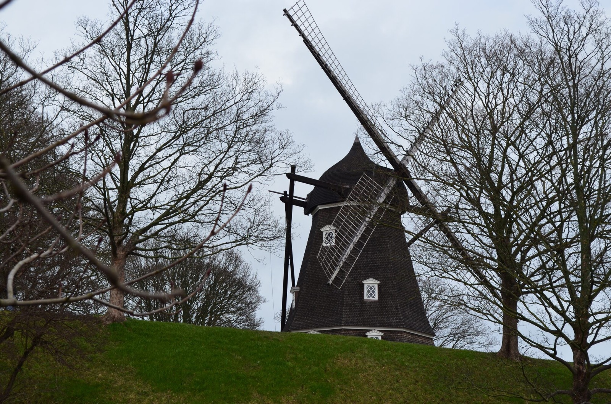
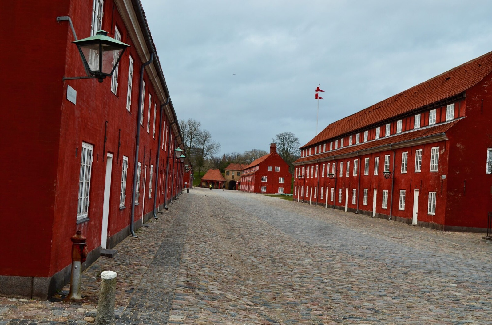
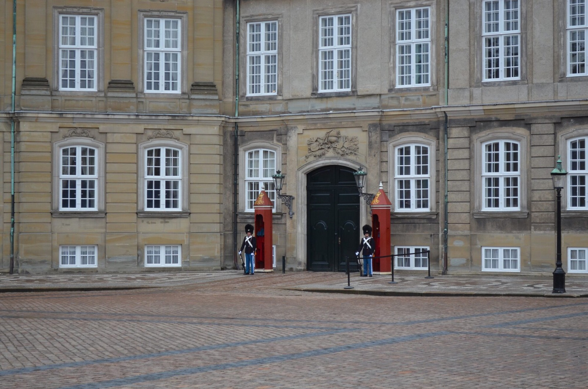
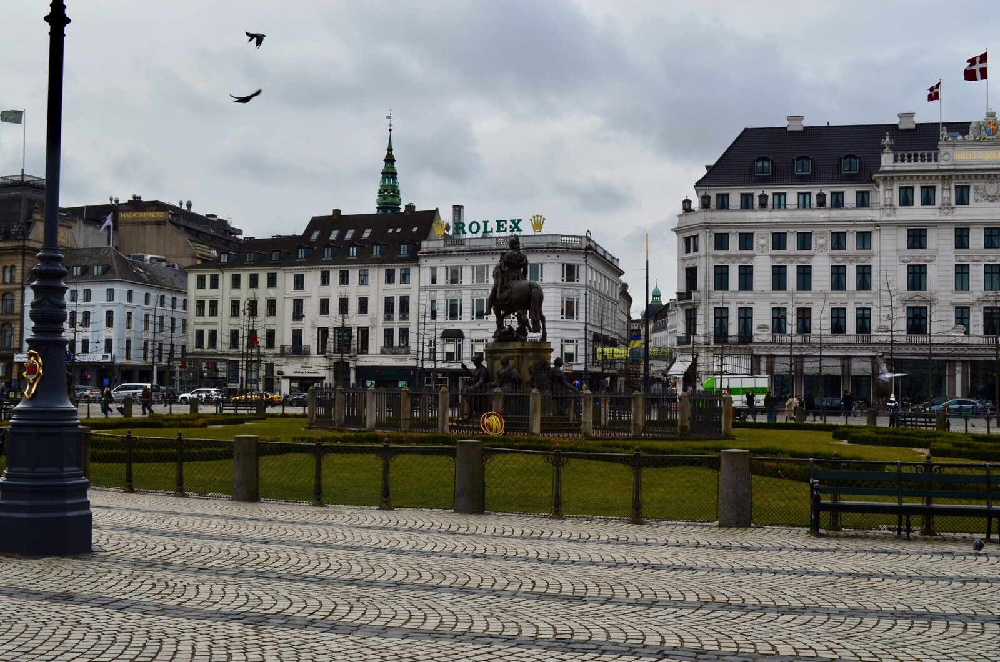
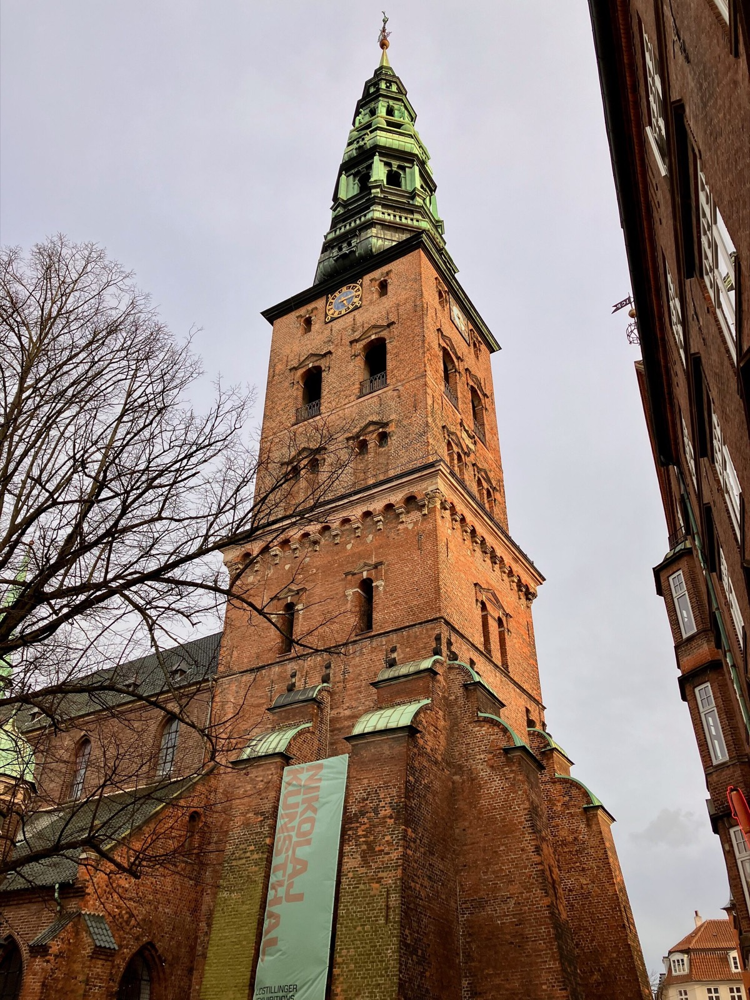
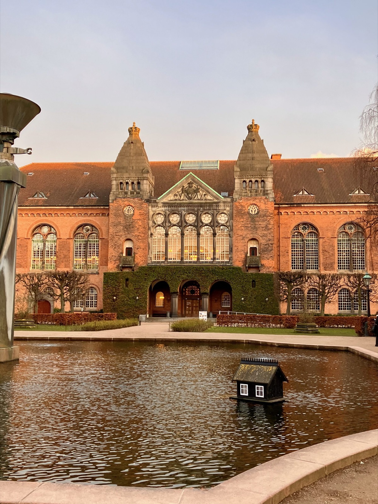
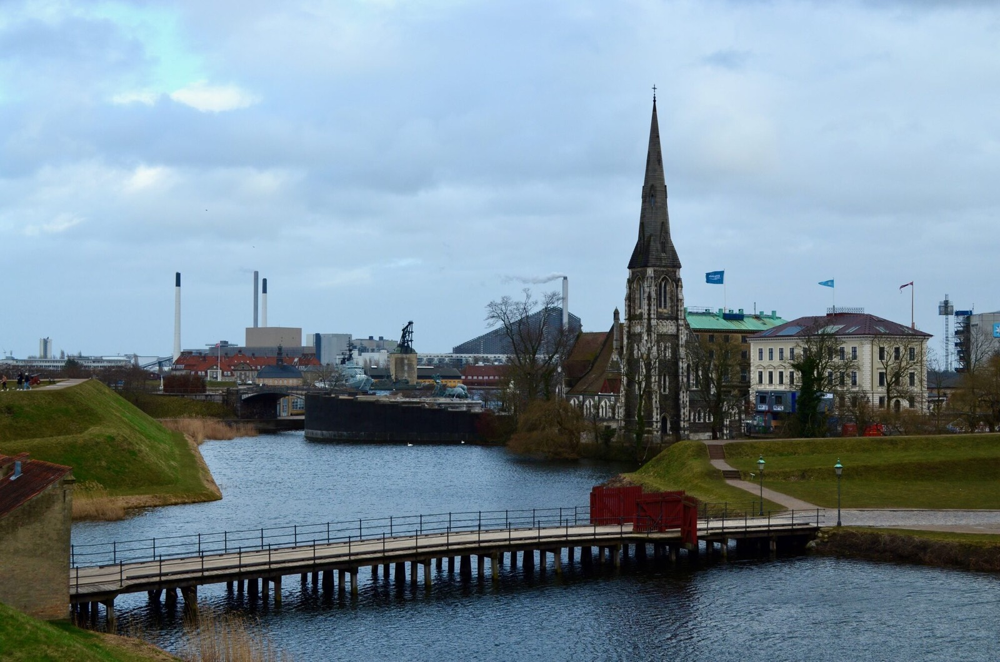
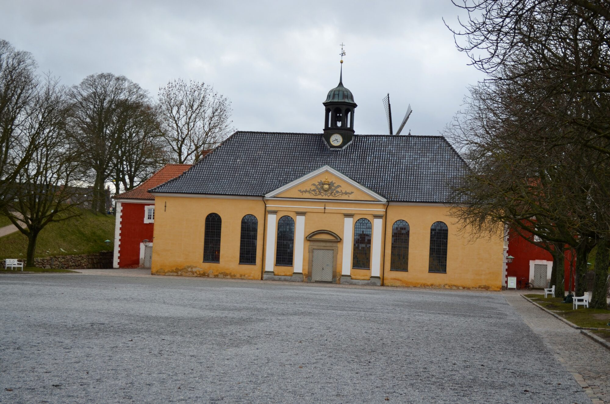
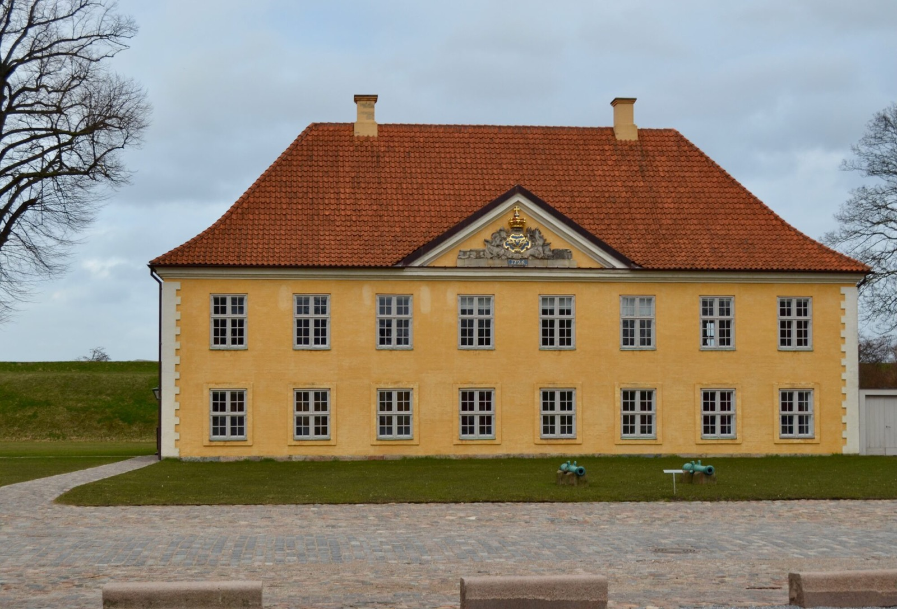

Denmark
Copenhagen
Historic streets, warm evening light, elegant architecture, and quiet city moments through my lens.
View PhotosAbout Copenhagen
Copenhagen combines Nordic calm, colorful streets, modern design, historic architecture, and a relaxed atmosphere by the water.
Copenhagen Gallery
A selection of photographs from Copenhagen — streets, architecture, light, and moments that defined the journey.














Travel Note
Walking Through Copenhagen
Copenhagen felt elegant and calm at the same time. Walking through its streets, I was drawn to the warm colors, the historic buildings, and the atmosphere that made even ordinary moments feel cinematic.